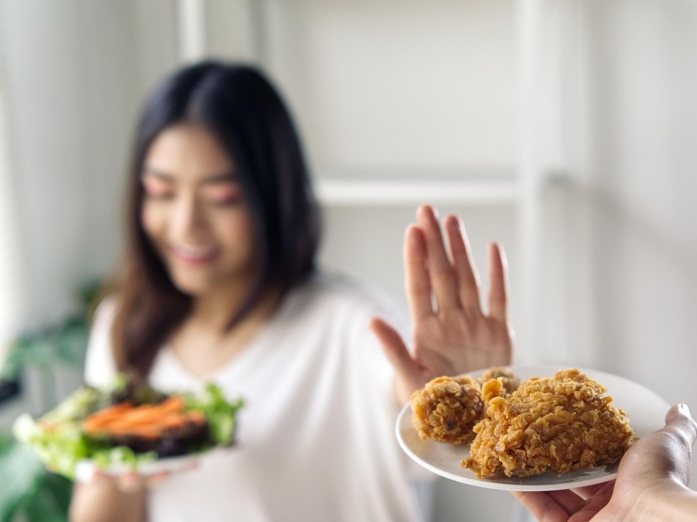

Why Plant-Based Food?
Healthier Than Ever
Plant-based or plant-forward eating patterns focus on foods primarily from plants. This includes not only fruits and vegetables, but also nuts, seeds, oils, whole grains, legumes, and beans. It doesn’t mean that you are vegetarian or vegan and never eat meat or dairy
